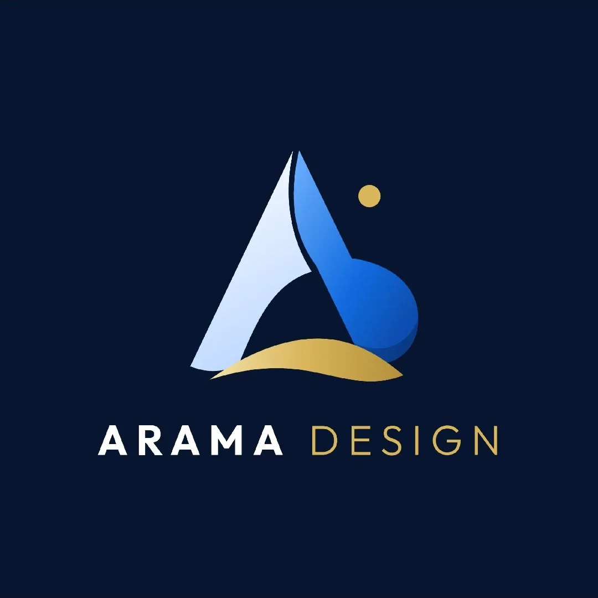

Case study · Visual identity · Arama Design · 2026
An identity for my own studio
Designing the Arama Design brand: a simple, meaningful symbol that reads as well on a poster as on a profile picture.
The need
A design studio is judged first on its own image. Arama Design needed a recognisable brand that works large on a poster and tiny on a profile picture, and says at a glance: a taste for design and professional seriousness.
The concept
Three elements carry the brand's message.

- The AThe initial of Arama, the studio's name.
- The golden waveClean simplicity: my taste for crisp design and a carefully crafted visual identity.
- The blueThe seriousness and professionalism expected in a business setting.
Palette
The process
- Start from the name
The symbol is built on the A of Arama: a strong initial, recognisable even without the text.
- Add a signature
The golden wave under the A expresses clean simplicity and my taste for a carefully crafted visual identity.
- Pick the colours
A midnight blue and a bright blue for professional seriousness, gold for the creative touch.
- Adapt to every use
Horizontal version, light-background version, monochrome version, white reversed version and app icon.
- Test it small
The symbol is shown at 120, 64, 36 and 20 pixels to check it stays readable on a profile picture or an icon.
The outcome
- A symbol recognisable without the studio name.
- A monochrome version for single-colour printing.
- An icon ready for apps and social media.
- A brand used on this portfolio and on my communication materials.
Variations
Click a screenshot to enlarge it.
Deliverables
Main logo, horizontal version, light-background version, monochrome version, white reversed version, app icon and profile picture, colour palette.